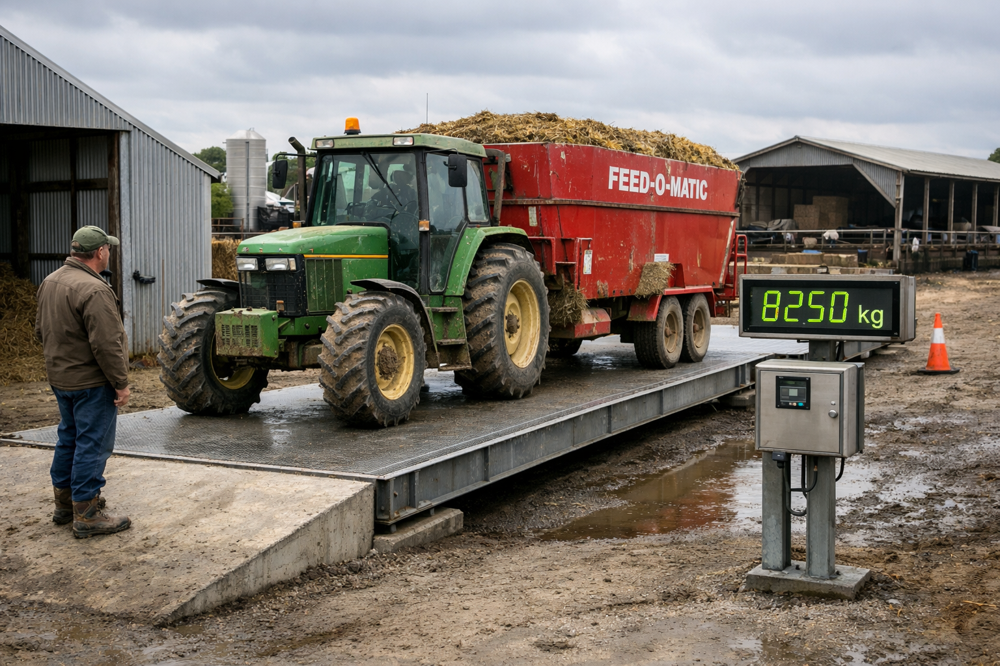

Kinetic Measurement Company began as Aquaferret--A marine specialist company designing and developing marine drives for Electric Vessels in 2008. The business moved into weighing in 2010 developing a number of marine compensation scales and peripherals for the local industry. Building on that knowledge, the business expanded into develoment of batching systems for Boral Concrete and then moved into packaging sytems and volumetric and weight based form fill machines.We have worked in filling and packaging process development for 15 years and In Motion weighing for materials handling for 10 years.
HOW WE HELP YOU-- We build everything we sell, this website is built and deployed by us, we are fitters welders plant operators and engineers.What you get from us is our equipment built locally with practical experience and hands-on knowledge, ensuring reliability and performance in real-world applications.
